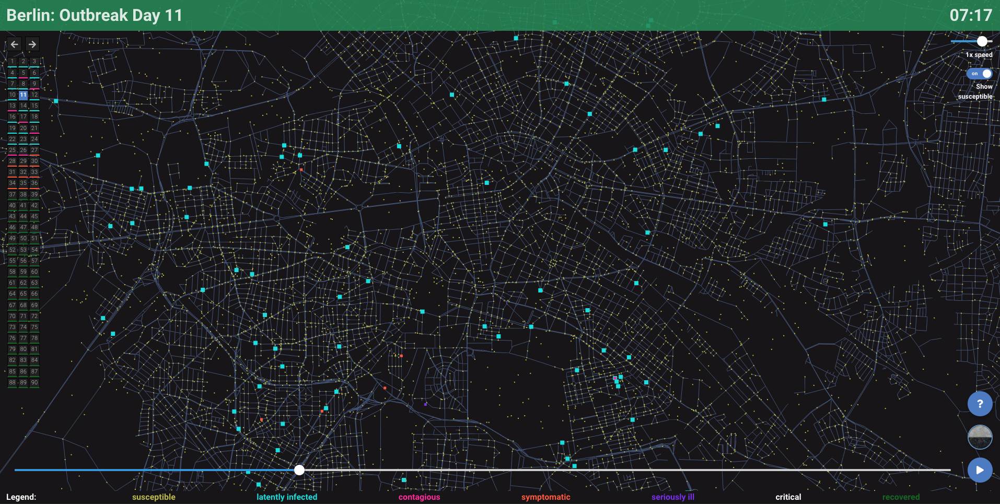
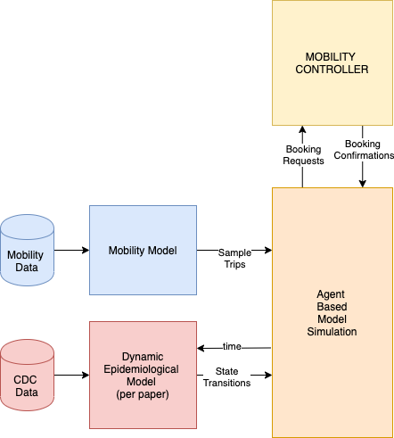

Dynamic COVID-19 Spreading Control via Permissive Population Mobility Policies
Dynamic COVID-19 Spreading Control via Permissive Population Mobility Policies¶

In this project, imagine that a pandemic hit NYC (imagine that) and that your local government wants to implement controls to all residents and visitors. As you can imagine in a free society imposing blanket rules can only degrade the already bad psychological state of the residents and can also be ineffective. People may not adhere to such rules.
The mayor contacts your data science organization and asks for help.
“Is there a system you can design that can one one hand will not prohibit people’s mobility but on the other will very smartly control it such that it can prevent overcrowding in popular places?”
You and the other data scientists in your org need to come up with an answer quickly and you start sketching an architecture as shown below:

You sit down and write a brief summary explaining the solution.
We allow residents to walk and jog within 1 mile around their primary residence listed in their driver’s license / ID. This way residents wont feel locked down, they can even sit outside their local coffee shops and restaurants.
For distances further than 1 mile, we need to have an smartphone app that will allow any resident to easily book a trip to a desired destination at a desired time (like using an Uber/Lyft app).
Our system will simply return a QR code (0) is this trip is confirmed (allowed) and an alternative time if this trip cant be allowed at the desired time. This way we are “flattening the curve” across time for all dominant destinations.
Your colleagues are enthusiastic but they ask what are the steps to implement such a system:
We need cellular data but in the absence of that and in the absence of any statistical model from the big tech firms google and Apple, you recall that your org has worked in a Kaggle competition that contains lots of mobility data within NYC. You may find the visualizations and data exploration shown here useful.
You suggest to start from the NYC taxi data and create a spatial mobility model of the city. Coincidentally you found a paper in the journal Nature where the authors did exactly that.
Since you now have a model you can simulate millions of trips. You present how this thing should look like ideally: The city of Berlin In fact a team released the source code behind COVID19 simulation.
A colleague of yours is asking why we need a model, cant we just use the taxi trips directly? You could, but you need to be able to keep the state of each of the agents across time. Agents (people) shouldn’t just vanish from trip to trip. If an agent becomes exposed and finally infected that agent should be remembered as being in this state for sometime and in fact transition to other states (e.g. recover) depending on an epidemiological model (see below).
You point out that the Berlin visualization is based on this dynamic epidemiological model and you suggest that a team must use the Mesa Agent Based Modeling library to simulate the agents and keep track of all agents’ state (movements, health state transitions) and finally export all agents in a data file for analysis and plotting of infection rates etc.
The last step is to try some “flatting the curve” strategies. There is a controller that is being added that receives all the agents booking requests for trips and depending on the state of each arrival zone / facility (number of other agents lurking around there) you can provide an booking confirmation for a later time slot T. You have 24 slots to assign and you need to keep track of the confirmations to make sure you don’t overbook. Also your policy should be fair to all agents - no agent should be allowed to cheat and receive consecutive booking confirmations.
Your manager forms 4 teams to handle the various components Spatial Mobility Model (SMM), Epidemiological Model (EMM), the Agent Based Modeling (ABM), the Mobility Controller. She mentions that “Failure is not an option. Your year end bonus will depend on the teamwork by 40% and the rest on the deliverable of your teams component (code and documentation)”.